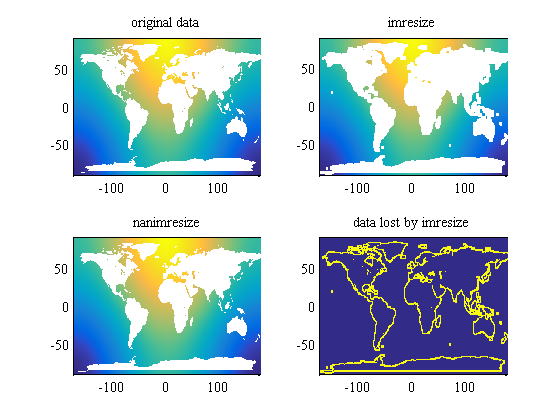

nanimresize documentation
The nanimresize function resizes an image using the Image Processing toolbox function imresize, but first fills NaNs to prevent missing data along NaN boundaries.
Contents
Requirements
This function requires Matlab's Image Processing Toolbox. This function includes John D'Errico's inpaint_nans function as a subfunction. Thanks John.
Syntax
B = nanimresize(A,scale) B = nanimresize(A,[NumRows NumCols]) [Y,NewMap] = nanimresize(X,Map,scale) [Y,NewMap] = nanimresize(X,Map,[NumRows NumCols])
Description
B = nanimresize(A, scale) returns an image that is scale times the size of A, which is a grayscale, RGB, or binary image.
B = nanimresize(A, [NumRows NumCols]) resizes the image so that it has the specified number of rows and columns. Either |NumRows or NumCols may be NaN, in which case imresize computes the number of rows or columns automatically in order to preserve the image aspect ratio.
[Y, NewMap] = nanimresize(X, Map, scale) resizes an indexed image.
[Y, NewMap] = nanimresize(X, Map, [NumRows NumCols]) resizes an indexed image.
To control the interpolation method used by imresize, add a method argument to any of the syntaxes above, like this:
nanimresize(A, scale, method)
nanimresize(A, [NumRows NumCols], METHOD),
nanimresize(X, MAP, M, METHOD)
nanimresize(X, MAP, [NUMROWS NUMCOLS], METHOD)method can be a string naming a general interpolation method:
'nearest' - nearest-neighbor interpolation
'bilinear' - bilinear interpolation
'bicubic' - cubic interpolation; the default method
method can also be a string naming an interpolation kernel:
'box' - interpolation with a box-shaped kernel
'triangle' - interpolation with a triangular kernel
(equivalent to 'bilinear') 'cubic' - interpolation with a cubic kernel
(equivalent to 'bicubic')'lanczos2' - interpolation with a Lanczos-2 kernel
'lanczos3' - interpolation with a Lanczos-3 kernel
Finally, method can be a two-element cell array of the form {f,w}, where f is the function handle for a custom interpolation kernel, and w is the custom kernel's width. f(x) must be zero outside the interval -w/2 <= x < w/2. Your function handle f may be called with a scalar or a vector input.
You can achieve additional control over nanimresize by using parameter/value pairs following any of the syntaxes above. For example:
B = nanimresize(A, SCALE, PARAM1, VALUE1, PARAM2, VALUE2, ...)
Parameters include:
'Antialiasing' - true or false; specifies whether to perform
antialiasing when shrinking an image. The
default value depends on the interpolation
method you choose. For the 'nearest' method,
the default is false; for all other methods,
the default is true. 'Colormap' - (only relevant for indexed images) 'original'
or 'optimized'; if 'original', then the
output newmap is the same as the input map.
If it is 'optimized', then a new optimized
colormap is created. The default value is
'optimized'. 'Dither' - (only for indexed images) true or false;
specifies whether to perform color
dithering. The default value is true.'Method' - As described above
'OutputSize' - A two-element vector, [MROWS NCOLS],
specifying the output size. One element may
be NaN, in which case the other value is
computed automatically to preserve the aspect
ratio of the image. 'Scale' - A scalar or two-element vector specifying the
resize scale factors. If it is a scalar, the
same scale factor is applied to each
dimension. If it is a vector, it contains
the scale factors for the row and column
dimensions, respectively.Example
Load some 0.25 degree sample data and resize it to 1 degree data:
load nanimresize_example.mat figure subplot(2,2,1) pcolor(lon,lat,Z) shading flat title 'original data' subplot(2,2,2) Zr = imresize(Z,0.25); lat_1deg = imresize(lat,0.25); lon_1deg = imresize(lon,0.25); pcolor(lon_1deg,lat_1deg,Zr) shading flat title 'imresize' subplot(2,2,3) Zr_nan = nanimresize(Z,0.25); pcolor(lon_1deg,lat_1deg,Zr_nan) shading flat title 'nanimresize' subplot(2,2,4) pcolor(lon_1deg,lat_1deg,isfinite(Zr_nan)-isfinite(Zr)) shading flat title 'data lost by imresize'

Author Info
This function was written by Chad A. Greene of the University of Texas at Austin's Institute for Geophysics (UTIG), April 2016. http://www.chadagreene.com.
Although Chad wrote this function, it is heavily dependent on John D'Errico's inpaint_nans function, which is included as a subfunction here. Many thanks to John for writing and sharing such a fine function.